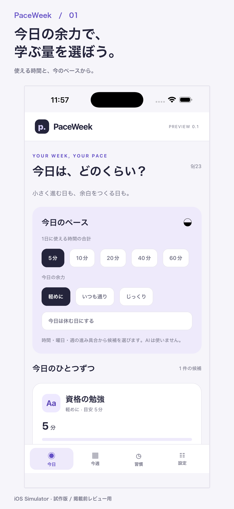
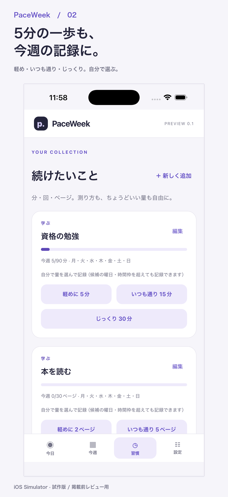
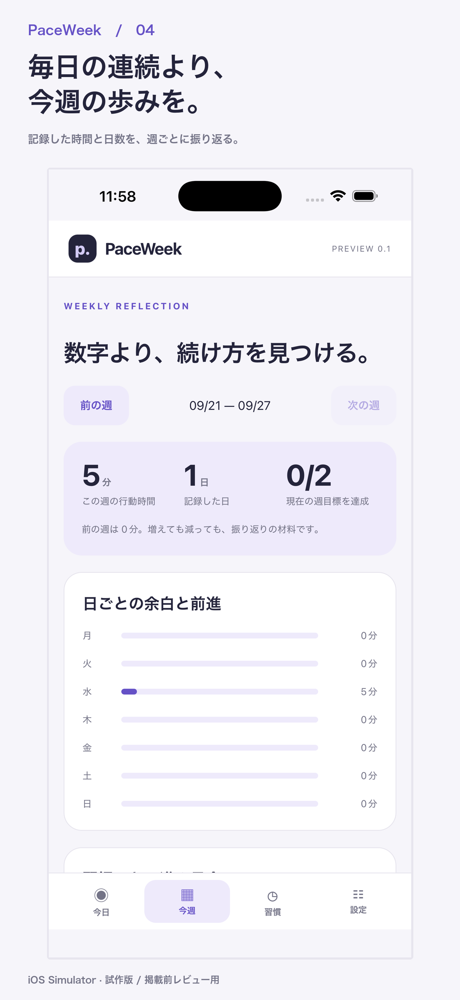

今日の時間から選ぶ
5分、10分、20分など今日使える時間と、軽め・いつも通り・じっくりの余力を選ぶと候補を表示します。
A LITTLE ROOM FOR YOUR WEEK
予定が変わる日にも、続け方を変えられる。PaceWeekは、使える時間と今のペースから、今日取り組む量を選べる習慣トラッカーです。
開発中のプランを見るiOS版を準備中 · 試作版 · アカウント登録なし

続け方を、毎日に合わせる
毎日同じ時間を確保できなくても、習慣を手放さずにすむように。PaceWeekは、今日の余白を起点に記録します。
5分、10分、20分など今日使える時間と、軽め・いつも通り・じっくりの余力を選ぶと候補を表示します。
分・ページ・回から測り方を選択。候補をそのまま記録しても、自分で量を選んでも使えます。
行動時間、記録した日、週の目標、日ごとの進み方をまとめて確認。休む日も記録の一部です。


YOUR WEEK, YOUR PACE
LOW FRICTION, LOW COST
現在は試作版です。価格・課金機能は検証中で、掲載時点では購入できません。
現在
¥0 / 課金なし
検証候補
月額150円 / 仮説
年額1,500円（2か月分無料案）
価格は確定していません。課金開始前にサービス内容と条件を更新します。
BEFORE YOU START
毎日同じ量をこなす前提ではありません。今日の時間と余力から量を選び直す設計です。習慣の定着や成果を保証するものではありません。
試作版では不要です。記録は端末またはブラウザ内に保存されます。アプリ削除やデータ消去で失われる可能性があるため、必要に応じてバックアップしてください。
使っていません。候補表示は、登録した目標・曜日・今日の時間・余力・週の進み具合をもとにしたアプリ内計算です。
現在は購入できません。月額150円・年額1,500円は検証中の価格仮説であり、販売価格ではありません。
試作版にはアカウント、クラウド同期、広告、解析SDKはありません。JSONをコピー・共有する場合は、ご自身で保存先を確認してください。
MAKE ROOM FOR YOUR WEEK
自分に合う続け方を、今週から試してみる。
利用規約・サービス方針を見る